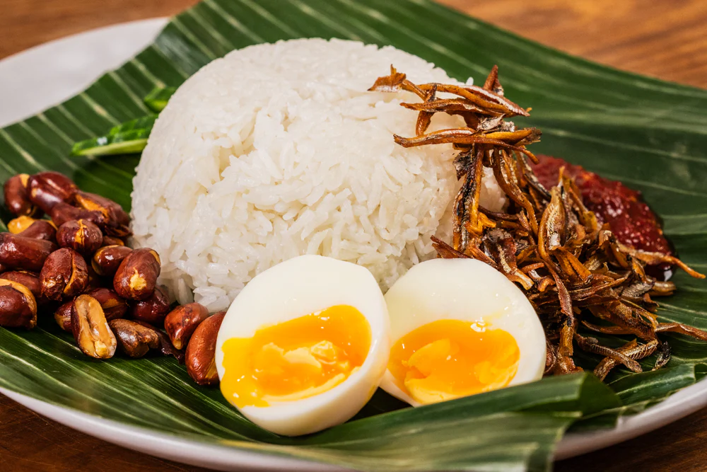

Nasi Lemak

Source: Andy Cooks
Description
Nasi lemak is a dish originating in Malay cuisine that consists of fragrant rice cooked in coconut milk and pandan leaf.
It is commonly found in Malaysia, where it is considered the national dish.
It is also a native dish in neighbouring areas with significant ethnic Malay populations
such as Singapore and Southern Thailand
With roots in Malay culture and Malay cuisine, its name in Malay literally means "fat rice",
but is taken in this context to mean "rich" or "creamy".The name is derived from the cooking process which
involves soaking the rice in coconut cream and steaming the mixture. The rice is normally cooked with
pandan leaves that gives its distinct flavour.
Ingredients
- 450g (1 lb) jasmine rice
- 200ml (6.8 fl oz) coconut milk
- 2 pandan leaves
(available frozen at local Asian supermarkets)
- bottom half of a lemongrass stalk
- salt to taste
- peanut oil for frying
- 200g (7 oz) raw peanuts
- 150g (5.3 oz) dried anchovies
- 4 eggs, soft-boiled
- 1/2 a cucumber, sliced
- banana leaves for serving
- your favourite sambal
Steps
- To make the coconut rice, rinse the rice three times and then drain the water.
Open the coconut milk and reserve the cream from the top for later.
Add the 200ml (6.8 fl oz) of coconut milk to the rice cooker bowl with the rinsed rice,
then top it off with water until it reaches the first knuckle of your finger.
Add the pandan and crushed lemongrass to the pot along with a pinch of salt, and cook in the rice cooker.
- Once the rice is cooked, add the reserved coconut cream to the top of the cooked rice
and let it sit for 10 minutes.
- Then, fry the peanuts and anchovies, boil your eggs to your liking (I recommend 7 minutes),
slice the cucumber, and toast the banana leaves over an open flame.
- To assemble, add the rice onto the toasted banana leaves,
then arrange the eggs, peanuts, cucumber, sambal, and fried anchovies around the outside.